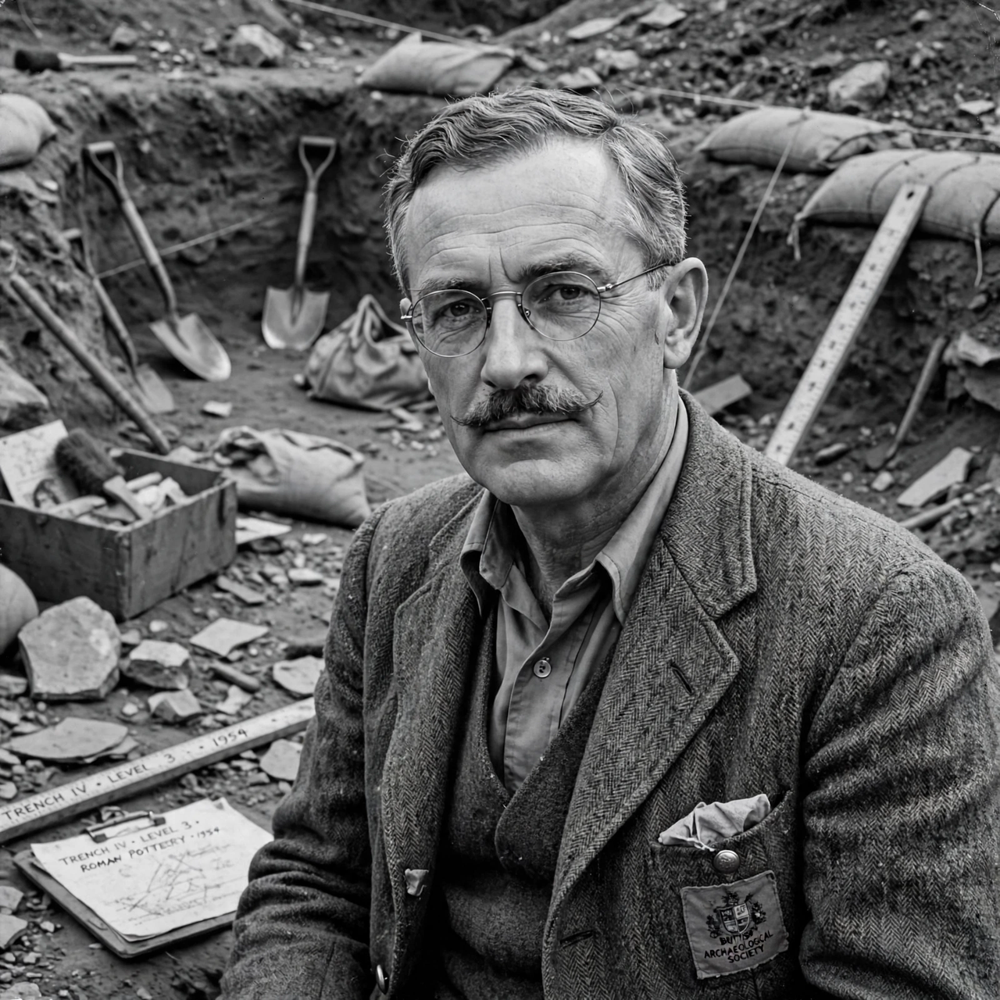

| Sir Mortimer Wheeler | |
|---|---|
 | |
| Born | 10 September 1890, Glasgow, Scotland |
| Died | 22 July 1976 (aged 85), London, England |
| Occupation | Archaeologist; army officer |
| Known for | Wheeler–Kenyon method; Maiden Castle; Indus Valley excavations |
| Awards | Knight Bachelor; CH; MC; FRS |
Sir Robert Eric Mortimer Wheeler (10 September 1890 – 22 July 1976) was a British archaeologist and officer in the British Army. Over the course of his career, he served as Director of both the National Museum of Wales and the London Museum, Director-General of the Archaeological Survey of India, and the founder and honorary director of the Institute of Archaeology in London, in addition to writing twenty-four books on archaeological subjects.
Wheeler was born in Glasgow and educated at University College London. After service in the First World War, in which he won the Military Cross, he became keeper, then director, of the National Museum of Wales, excavating Roman sites in Wales including Segontium and Y Gaer. Moving to the London Museum in 1926, he excavated at Lydney Park and, with his first wife Tessa, at Verulamium (St Albans).
Wheeler refined the grid-box method of excavation — the "Wheeler–Kenyon method" — keeping standing baulks between square trenches so that stratigraphy could be recorded in section. His excavations at Maiden Castle, Dorset (1934–37), near Dorchester, became famous for their scale, publicity and the discovery of a "war cemetery" of Britons killed defending the hillfort against Rome.
As Director-General of the Archaeological Survey of India (1944–48), Wheeler excavated at Taxila, Harappa and Mohenjo-daro, and at Arikamedu in the south, establishing a firmer chronology for the Indus Valley Civilisation. His interpretation of skeletons at Mohenjo-daro as victims of an "Aryan massacre" has since been widely rejected. Later he excavated at Stanwick and became Britain's best-known television archaeologist through programmes such as Animal, Vegetable, Mineral? He was voted British "Personality of the Year" in 1954 and was a founder figure of the Institute of Archaeology.